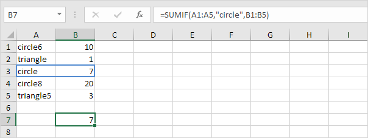
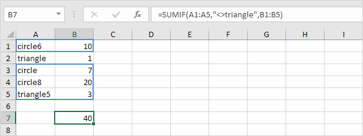

Sumif
Kriteria Numerik | Kriteria Teks | Kriteria Tanggal | Dan Kriteria | Atau Kriteria
Fungsi SUMIF yang kuat di Excel menjumlahkan sel berdasarkan satu kriteria. Halaman ini berisi banyak contoh SUMIF yang mudah diikuti.
Kriteria Numerik
Gunakan fungsi SUMIF di Excel untuk menjumlahkan sel berdasarkan angka yang memenuhi kriteria tertentu.
1. Fungsi SUMIF di bawah (dua argumen) menjumlahkan nilai dalam Range A1:A5 yang kurang dari atau sama dengan 10.
2. Fungsi SUMIF berikut memberikan hasil yang sama persis. Operator & menggabungkan simbol 'kurang dari atau sama dengan' dan nilai dalam sel C1.

3. Fungsi SUMIF di bawah ini (tiga argumen, argumen terakhir adalah Range yang akan dijumlahkan) menjumlahkan nilai dalam Range B1:B5 jika sel terkait dalam Range A1:A5 berisi nilai 25.

4. Fungsi SUMIF berikut memberikan hasil yang sama persis (argumen kedua mengacu pada sel D1).

Kriteria Teks
Gunakan fungsi SUMIF di Excel untuk menjumlahkan sel berdasarkan string teks yang memenuhi kriteria tertentu. Selalu sertakan teks dalam tanda kutip ganda.
1. Fungsi SUMIF di bawah ini menjumlahkan nilai dalam Range B1:B5 jika sel yang sesuai dalam Range A1:A5 berisi lingkaran persis.

2. Fungsi SUMIF di bawah ini menjumlahkan nilai dalam Range B1:B5 jika sel terkait dalam Range A1:A5 tidak berisi segitiga sama persis.

3. Fungsi SUMIF di bawah ini menjumlahkan nilai dalam Range B1:B5 jika sel yang sesuai dalam Range A1:A5 berisi persis lingkaran + 1 karakter. Tanda tanya (?) cocok dengan tepat satu karakter.

4. Fungsi SUMIF di bawah ini menjumlahkan nilai dalam Range B1:B5 jika sel terkait dalam Range A1:A5 berisi rangkaian nol atau lebih karakter + file. Tanda bintang (*) cocok dengan serangkaian karakter nol atau lebih.

5. Fungsi SUMIF di bawah jumlah nilai dalam Range B1:B5 jika sel yang sesuai dalam Range A1:A5 berisi segitiga atau lingkaran8 yang tepat.

Kriteria Tanggal
Gunakan fungsi SUMIF di Excel untuk menjumlahkan sel berdasarkan tanggal yang memenuhi kriteria tertentu.
1. Fungsi SUMIF di bawah ini menjumlahkan penjualan setelah 20 Januari 2018.

Catatan: fungsi DATE di Excel menerima tiga argumen: tahun, bulan, dan hari.
2. Fungsi SUMIF di bawah ini menjumlahkan penjualan hari ini.

Catatan: hari ini adalah 3 Agustus 2018.
3. Fungsi SUMIFS (dengan huruf S di akhir) di bawah ini menjumlahkan penjualan antara dua tanggal.

Catatan: fungsi SUMIFS di Excel menjumlahkan sel berdasarkan dua atau lebih kriteria (argumen pertama adalah Range yang akan dijumlahkan, diikuti oleh dua atau lebih pasangan Range/kriteria). Sesuaikan tanggal untuk menjumlahkan penjualan pada bulan, tahun, dll.
Dan Kriteria
Menjumlahkan dengan kriteria Dan di Excel itu mudah.
1. Misalnya, untuk menjumlahkan sel yang memenuhi kriteria berikut: Google dan Stanford (dua Range kriteria), cukup gunakan fungsi SUMIFS (dengan huruf S di akhir).

Catatan: ingat, saat menggunakan fungsi SUMIFS, argumen pertama adalah Range yang akan dijumlahkan, diikuti oleh dua atau lebih pasangan Range/kriteria.
Atau Kriteria
Menjumlahkan dengan kriteria Or di Excel bisa jadi rumit.
1. Rumus di bawah ini menjumlahkan sel yang memenuhi kriteria berikut: Google atau Facebook (satu Range kriteria). Tidak ada ilmu roket sejauh ini.

2. Namun, jika Anda ingin menjumlahkan sel yang memenuhi kriteria berikut: Google atau Stanford (dua Range kriteria), Anda tidak bisa begitu saja menggunakan fungsi SUMIF dua kali (lihat gambar di bawah).

Catatan: sel yang memenuhi kriteria Google dan Stanford ditambahkan dua kali, tetapi hanya boleh ditambahkan satu kali. 10 adalah jawaban yang kita cari.
3. Rumus array di bawah ini berhasil.

Catatan: selesaikan rumus array dengan menekan Ctrl+Shift+Enter. Excel menambahkan kurung kurawal {}. Kunjungi halaman kami tentang Menjumlahkan dengan Atau Kriteria untuk instruksi terperinci tentang cara membuat rumus array ini.